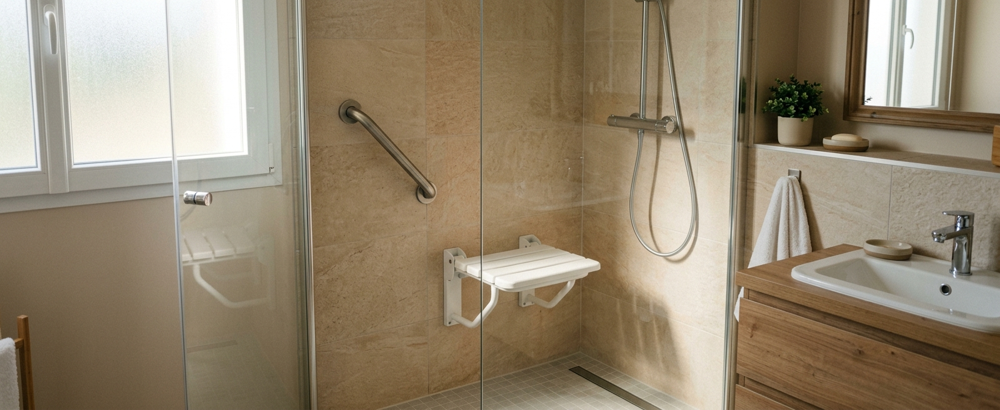

Douche senior et douche PMR : les deux notions en un tableau
Synthèse indicative : les deux notions se recouvrent en partie — c’est le besoin de l’utilisateur qui trace la frontière, pas l’étiquette du produit.
Ce que recouvre « douche senior »
Le terme regroupe des configurations très variées : une douche existante sécurisée par des barres et un siège, un receveur extra-plat remplaçant une baignoire, une cabine préfabriquée à porte basse, ou une douche de plain-pied carrelée. Le point commun : faciliter l’usage quotidien — entrer, se tenir, s’asseoir, régler l’eau — pour une personne encore mobile mais qui veut éliminer l’enjambement et les gestes d’équilibriste.
Deux vendeurs peuvent donc proposer des « douches senior » radicalement différentes. Comparez les caractéristiques concrètes (hauteur d’entrée, dimensions, siège, renforts), pas l’appellation. Les prix par configuration sont détaillés dans notre guide Quel est le prix d’une douche senior ?.
Ce que recouvre « PMR »
« Personne à mobilité réduite » ne signifie pas uniquement « en fauteuil roulant ». La notion couvre des difficultés variées : marcher longtemps, garder l’équilibre, se relever d’une position assise, effectuer un transfert, utiliser un déambulateur ou une canne, ou avoir besoin de l’aide d’un proche pour la toilette. Une douche « PMR » est conçue à partir de ces gestes réels :
- ·Entrer sans obstacle — y compris avec une aide technique ;
- ·Manœuvrer — un espace suffisant devant et dans la douche, une porte qui ne bloque pas le passage ;
- ·Transférer — passer du fauteuil ou du déambulateur au siège de douche, avec des appuis au bon endroit ;
- ·Commander — robinetterie et douchette atteignables assis, préhension facile, température sécurisée.
Deux idées reçues à corriger
Une cabine « senior » peut rester trop étroite pour un transfert, avoir une porte qui bloque l’accès en fauteuil, un siège mal positionné ou des commandes hors de portée en position assise. Si la mobilité est réduite aujourd’hui — ou risque de l’être —, vérifiez l’espace, les appuis et les commandes, pas l’étiquette.
L’absence de seuil règle l’entrée, pas le reste : une douche italienne de 70 cm de large sans siège ni barres reste inadaptée à une mobilité réduite. Inversement, un receveur extra-plat bien équipé peut convenir parfaitement. Le seuil n’est qu’un critère parmi quatre.
Entrée, espace, siège, commandes : les quatre critères qui comptent
- 1.L’entrée — du receveur classique (10–15 cm) à l’extra-plat (quelques cm) et au plain-pied (aucun ressaut). Plus l’entrée est basse, plus les travaux de sol et d’étanchéité comptent ; la faisabilité du plain-pied dépend du plancher. Les dimensions réglementaires précises ne s’appliquent qu’à certains contextes (voir plus bas) — chez vous, c’est votre geste d’entrée qui fait référence.
- 2.L’espace — dimensions de la douche, zone libre devant pour manœuvrer ou être aidé, ouverture de la paroi qui ne condamne ni la porte ni le lavabo. Avec déambulateur ou fauteuil, l’espace de circulation dans toute la pièce compte autant que la douche.
- 3.Le siège et les appuis — siège rabattable fixé sur renforts (pas une simple chaise posée) à hauteur de transfert, barres placées selon le geste réel — le détail équipement par équipement est dans notre guide des équipements : se relever, pivoter, se stabiliser. Le bon positionnement dépend de l’utilisateur — c’est l’objet de la visite technique, et de l’avis d’un ergothérapeute dans les situations complexes.
- 4.Les commandes — mitigeur thermostatique anti-brûlure, commandes atteignables assis, douchette sur barre réglable avec flexible assez long, préhension facile même mains mouillées.
Logement privé : quelles règles s’appliquent vraiment ?
Les prescriptions d’accessibilité chiffrées (dimensions, ressauts, espaces de manœuvre) concernent principalement les constructions neuves, certains logements collectifs et les établissements recevant du public. Dans une salle de bain privée existante, vous rénovez librement : rien ne vous oblige à atteindre les caractéristiques « ERP », et une salle de bain familiale n’a pas à ressembler à un équipement collectif.
Ces référentiels restent utiles comme source d’inspiration — ils documentent des dimensions de transfert et de manœuvre éprouvées — mais votre projet se définit à partir de l’utilisateur : ses gestes d’aujourd’hui, et ceux qu’il faut anticiper. C’est aussi la logique des aides à l’adaptation comme MaPrimeAdapt’, centrées sur le besoin de la personne, pas sur une norme de bâtiment.
Quel niveau d’adaptation selon votre situation ?
Orientations générales — le bon projet se confirme avec un professionnel, sur place, à partir des gestes réels de l’utilisateur.
Qui peut vous aider à définir le projet ?
Un installateur spécialisé en salle de bain adaptée sait traduire vos gestes en implantation : hauteur du siège, position des barres, sens d’ouverture de la paroi. Pour les situations complexes (transferts difficiles, fauteuil, pathologie évolutive), l’avis d’un ergothérapeute est précieux — c’est d’ailleurs le type d’évaluation prévue dans le parcours MaPrimeAdapt’. Plombiers et entreprises de rénovation interviennent ensuite sur la réalisation.
Go Senior vous aide à comprendre les solutions possibles, à préparer votre projet et à vérifier si un professionnel prenant en charge ce type d’adaptation intervient dans votre secteur.
Définir la solution adaptée à votre salle de bain
Décrivez les difficultés rencontrées, votre installation actuelle et votre code postal pour vérifier les possibilités disponibles dans votre secteur. Gratuit et sans engagement.
Questions fréquentes
Quelle est la différence entre douche senior et douche PMR ?
« Douche senior » est une appellation commerciale pour une douche à usage facilité ; « douche PMR » désigne une conception pensée pour une mobilité réduite (espace, transfert, commandes). La première n’implique pas automatiquement la seconde.
Une douche italienne est-elle une douche PMR ?
Pas nécessairement : l’italienne supprime le seuil, mais une douche PMR exige aussi l’espace de manœuvre, le siège, les appuis et des commandes atteignables. Une italienne étroite sans équipement n’est pas adaptée à une mobilité réduite.
Une douche PMR est-elle obligatoire dans un logement privé ?
Non. Les prescriptions chiffrées d’accessibilité visent le neuf, certains logements collectifs et les établissements recevant du public. Dans votre salle de bain existante, vous adaptez librement selon vos besoins.
Quelles dimensions prévoir pour une douche accessible ?
Le plus grand receveur que la pièce permet — l’emprise d’une ancienne baignoire (≈ 160 × 75 cm) est un bon point de départ — plus une zone libre devant la douche pour manœuvrer ou aider. Les dimensions exactes se valident sur place selon l’utilisateur et ses aides techniques.
Quel siège de douche choisir ?
Un siège rabattable fixé sur renforts muraux pour un usage durable ; une chaise ou un tabouret de douche pour un besoin léger ou transitoire. La hauteur et la position se règlent sur le geste de transfert de l’utilisateur.
Où placer les barres d’appui ?
Là où le geste en a besoin : une verticale près de l’entrée pour franchir, une horizontale ou oblique près du siège pour s’asseoir et se relever. Le positionnement se détermine avec la personne, sur place — pas sur catalogue.
Une personne en fauteuil peut-elle utiliser une douche senior ?
Seulement si la conception le permet : accès de plain-pied, espace de transfert, siège adapté, commandes atteignables. Beaucoup de « douches senior » du commerce ne remplissent pas ces conditions — d’où l’importance de partir du besoin, pas de l’étiquette.
Peut-on adapter une petite salle de bain ?
Souvent oui : receveur compact, paroi coulissante ou rideau (aucun débattement), meuble suspendu pour libérer le sol, porte inversée ou coulissante. Dans les cas très contraints, le réagencement de la pièce se chiffre avec le professionnel.
Quel est le prix d’une douche PMR ?
Selon l’ampleur : de l’ordre d’un remplacement de baignoire équipé (4 000 – 9 000 €) à un réagencement complet de la pièce (8 000 – 15 000 €, estimations 2026). MaPrimeAdapt’ peut couvrir 50 à 70 % des dépenses éligibles sous conditions. Voir le détail des prix.